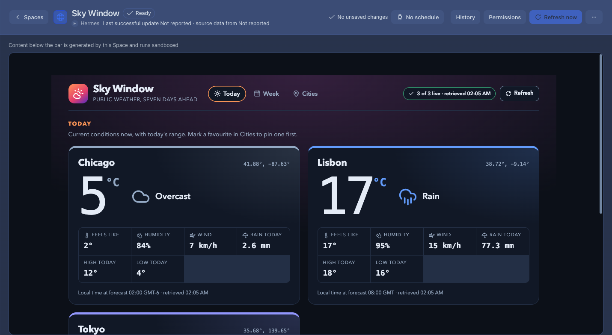
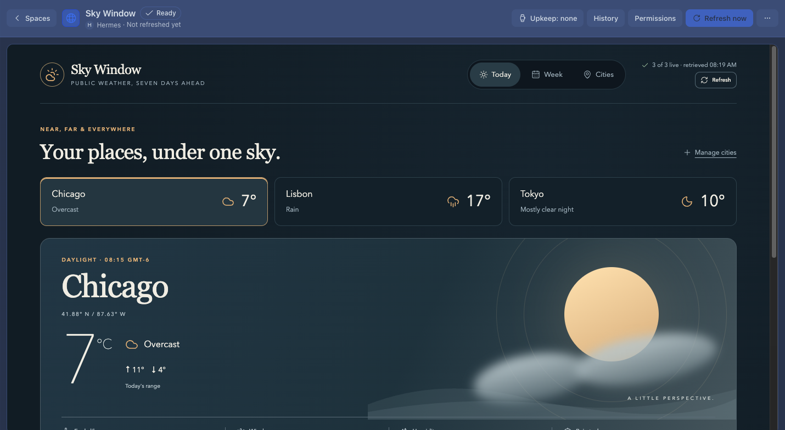
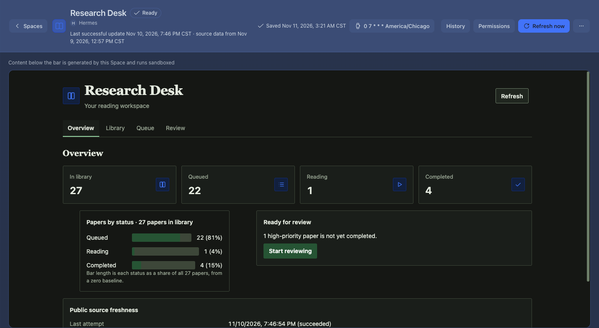
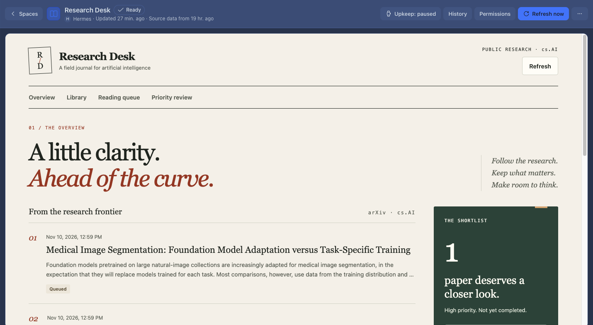
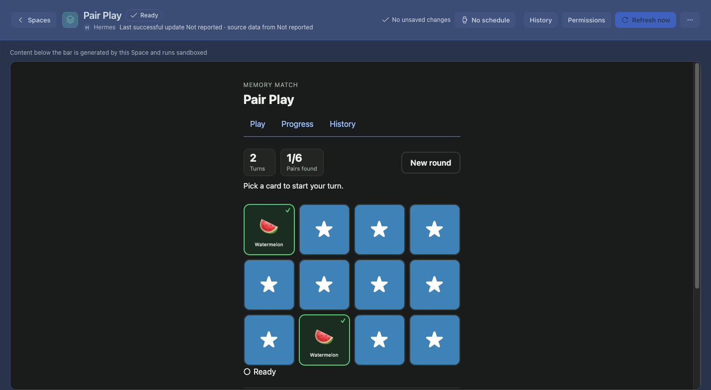
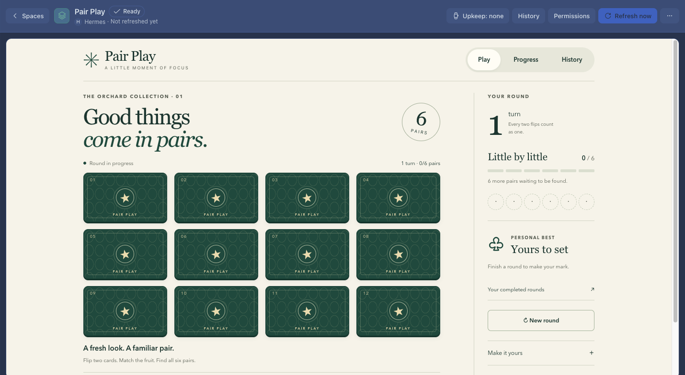

Real isolated-host captures, not mockups. Pre-iteration review; polish reruns are pending. Dates, data and scroll positions differ. Open each image for original pixels.
Review and reproduction steps · Host audit and state matrix
Preserve observatory. Bring current conditions forward on narrow screens.


Preserve journal. Keep Library search and results adjacent.


Preserve orchard. Compact phone heading and qualify elapsed duration.

